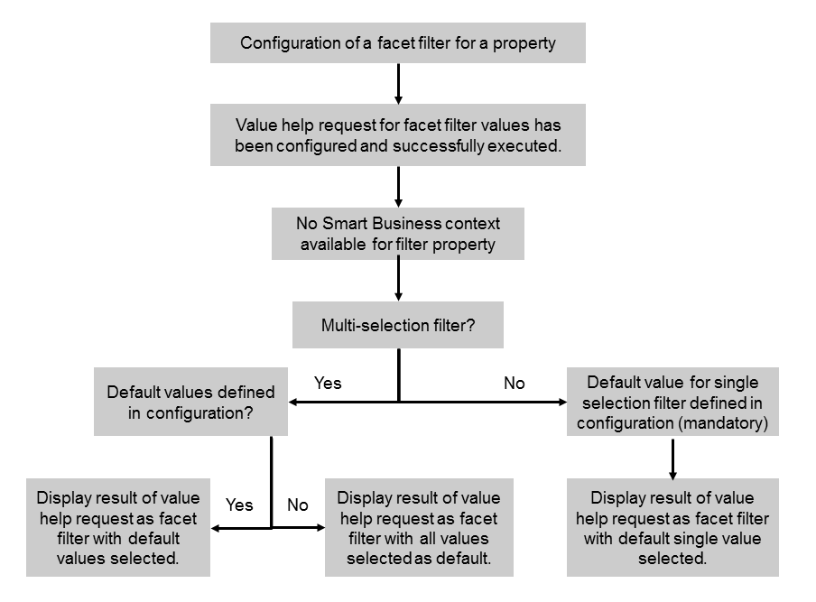

For this use case, all of the following apply:
As a result, the facet filter is displayed in the application and its value help is populated with all values retrieved by the configured value help request.
To configure the facet filter for this use case, you must enter information for the facet filter definition and for the value help. No entries for the filter resolution are required.
You can configure whether multiple selections are possible in the value help or not. If multiple selections are possible you can specify one or several values (comma-separated list) that are used as default selection. If you don't specify any default values all values are selected in the facet filter by default.
If only single selection is allowed, it is mandatory to specify a default value. If you specify a comma-separated list, the first entry is used as default.
If you specify default values that do not exist in the value help, these values will occur in the facet filter in addition to the values provided by the value help request.
The option described above is depicted in the following figure:
